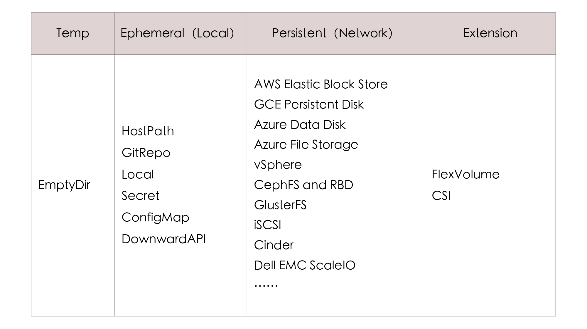
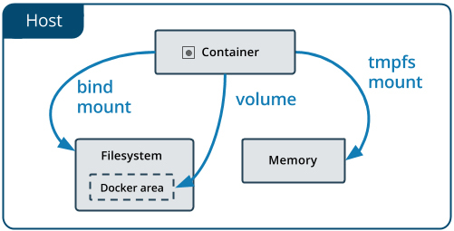
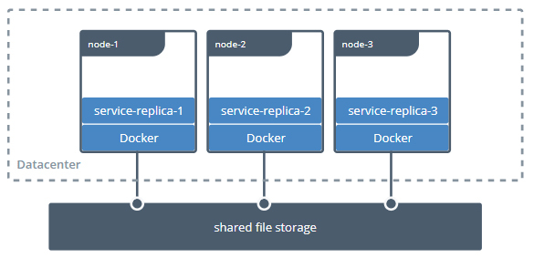
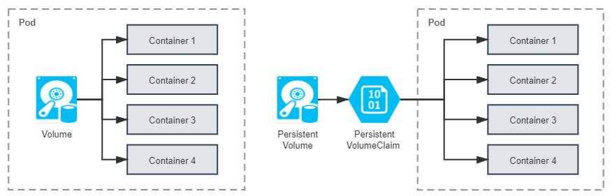
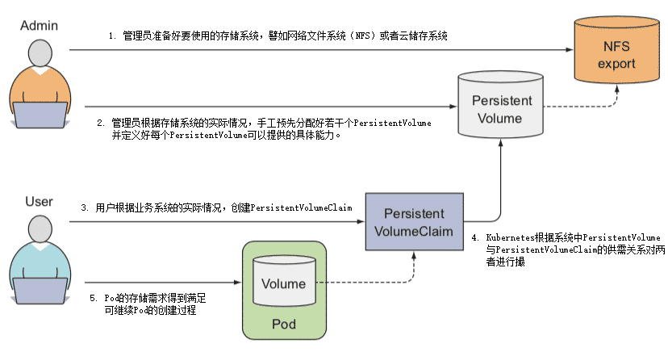
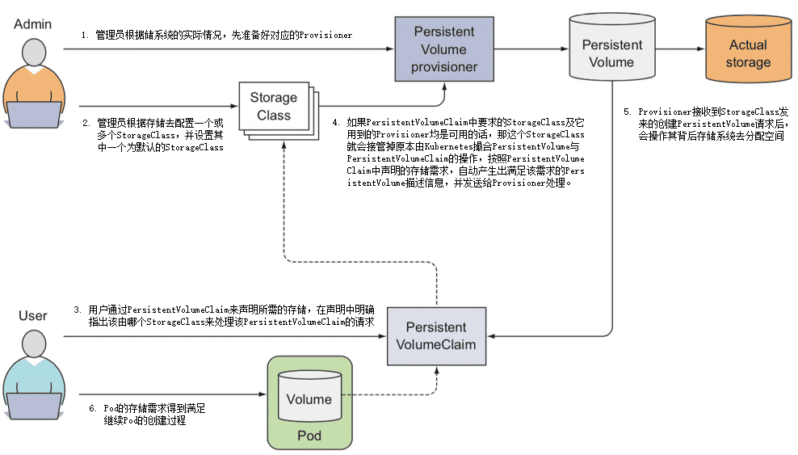

- 00 _导读 _ 什么是“The Fenix Project”？.md.html
- 00 开篇词 _ 如何构建一个可靠的分布式系统？.md.html
- 01 _ 原始分布式时代：Unix设计哲学下的服务探索.md.html
- 02 _ 单体系统时代：应用最广泛的架构风格.md.html
- 03 _ SOA时代：成功理论与失败实践.md.html
- 04 _ 微服务时代：SOA的革命者.md.html
- 05 _ 后微服务时代：跨越软件与硬件之间的界限.md.html
- 06 _ 无服务时代：“不分布式”云端系统的起点.md.html
- 07 _ 远程服务调用（上）：从本地方法到远程方法的桥梁.md.html
- 08 _ 远程服务调用（下）：如何选择适合自己的RPC框架？.md.html
- 09 _ RESTful服务（上）：从面向过程编程到面向资源编程.md.html
- 10 _ RESTful服务（下）：如何评价服务是否RESTful？.md.html
- 11 _ 本地事务如何实现原子性和持久性？.md.html
- 12 _ 本地事务如何实现隔离性？.md.html
- 13 _ 全局事务和共享事务是如何实现的？.md.html
- 14 _ 分布式事务之可靠消息队列.md.html
- 15 _ 分布式事务之TCC与SAGA.md.html
- 16 _ 域名解析系统，优化HTTP性能的第一步.md.html
- 17 _ 客户端缓存是如何帮助服务器分担流量的？.md.html
- 18 _ 传输链路，优化HTTP传输速度的小技巧.md.html
- 19 _ 如何利用内容分发网络来提高网络性能？.md.html
- 20 _ 常见的四层负载均衡的工作模式是怎样的？.md.html
- 21 _ 服务端缓存的三种属性.md.html
- 22 _ 分布式缓存如何与本地缓存配合，提高系统性能？.md.html
- 23 _ 认证：系统如何正确分辨操作用户的真实身份？.md.html
- 24 _ 授权（上）：系统如何确保授权的过程可靠？.md.html
- 25 _ 授权（下）：系统如何确保授权的结果可控？.md.html
- 26 _ 凭证：系统如何保证与用户之间的承诺是准确完整且不可抵赖的？.md.html
- 27 _ 保密：系统如何保证敏感数据无法被内外部人员窃取滥用？.md.html
- 28 _ 传输（上）：传输安全的基础，摘要、加密与签名.md.html
- 29 _ 传输（下）：数字证书与传输安全层.md.html
- 30 _ 验证：系统如何确保提交给服务的数据是安全的？.md.html
- 31 _ 分布式共识（上）：想用好分布式框架，先学会Paxos算法吧.md.html
- 32 _ 分布式共识（下）：Multi Paxos、Raft与Gossip，分布式领域的基石.md.html
- 33 _ 服务发现如何做到持续维护服务地址在动态运维中的时效性？.md.html
- 34 _ 路由凭什么作为微服务网关的基础职能？.md.html
- 35 _ 如何在客户端实现服务的负载均衡？.md.html
- 36 _ 面对程序故障，我们该做些什么？.md.html
- 37 _ 要实现某种容错策略，我们该怎么做？.md.html
- 38 _ 限流的目标与模式.md.html
- 39 _ 如何构建零信任网络安全？.md.html
- 40 _ 如何实现零信任网络下安全的服务访问？.md.html
- 41 _ 分布式架构中的可观测到底说的是什么？.md.html
- 42 _ 分析日志真的没那么简单.md.html
- 43 _ 一个完整的分布式追踪系统是什么样子的？.md.html
- 44 _ 聚合度量能给我们解决什么问题？.md.html
- 45 _ 模块导学：从微服务到云原生.md.html
- 46 _ 容器的崛起（上）：文件、访问、资源的隔离.md.html
- 47 _ 容器的崛起（下）：系统、应用、集群的封装.md.html
- 48 _ 以容器构建系统（上）：隔离与协作.md.html
- 49 _ 以容器构建系统（下）：韧性与弹性.md.html
- 50 _ 应用为中心的封装（上）：Kustomize与Helm.md.html
- 51 _ 应用为中心的封装（下）：Operator与OAM.md.html
- 52 _ Linux网络虚拟化（上）：信息是如何通过网络传输被另一个程序接收到的？.md.html
- 53 _ Linux网络虚拟化（下）：Docker所提供的容器通讯方案有哪些？.md.html
- 54 _ 容器网络与生态：与CNM竞争过后的CNI下的网络插件生态.md.html
- 55 _ 谈谈Kubernetes的存储设计理念.md.html
- 56 _ Kubernetes存储扩展架构：一个真实的存储系统如何接入或移除新存储设备？.md.html
- 57 _ Kubernetes存储生态系统：几种有代表性的CSI存储插件的实现.md.html
- 58 _ Kubernetes的资源模型与调度器设计.md.html
- 59 _ 透明通讯的涅槃（上）：通讯的成本.md.html
- 60 _ 透明通讯的涅槃（下）：控制平面与数据平面.md.html
- 61 _ 服务网格与生态：聊聊服务网格的两项标准规范.md.html
- 62 _ Fenix's Bookstore的前端工程.md.html
- 63 _ 基于Spring Boot的单体架构.md.html
- 64 _ 基于Spring Cloud的微服务架构.md.html
- 65 _ 基于Kubernetes的微服务架构.md.html
- 66 _ 基于Istio的服务网格架构.md.html
- 67 _ 基于云计算的无服务架构.md.html
- 春节特别放送（上）_ 有的放矢，事半功倍.md.html
- 春节特别放送（下）_ 积累沉淀，知行合一.md.html
- 用户故事 _ 詹应达：持续成长，不惧未来.md.html
- 结束语 _ 程序员之路.md.html
- 结课测试 _ 一套习题，测出你的掌握程度.md.html
- 捐赠
55 _ 谈谈Kubernetes的存储设计理念
你好，我是周志明。从这节课起，我会用三讲带你学习容器编排系统存储方面的知识点。今天这节课，我们先来探讨下Kubernetes的存储设计理念。
Kubernetes的存储设计考量
在开始之前，我想先表明一下我对Kubernetes存储能力的态度。Kubernetes在规划持久化存储能力的时候，依然遵循着它的一贯设计哲学，用户负责以资源和声明式API来描述自己的意图，Kubernetes负责根据用户意图来完成具体的操作。不过我认为，就算只是描述清楚用户的存储意图，也不是一件容易的事情，相比Kubernetes提供的其他能力的资源，它内置的存储资源其实格外地复杂，甚至可以说是有些繁琐的。
如果你是Kubernetes的拥趸，不能认同我对Kubernetes的批评，那不妨来看一看下列围绕着“Volume”所衍生出的概念，它们仅仅是与Kubernetes存储相关概念的一个子集而已，你在看的时候也可以来思考一下，这些概念是否全都是必须的、是否还有整合的空间、是否有化繁为简的可能性：
概念：Volume、PersistentVolume、PersistentVolumeClaim、Provisioner、StorageClass、Volume Snapshot、Volume Snapshot Class、Ephemeral Volumes、FlexVolume Driver、Container Storage Interface、CSI Volume Cloning、Volume Limits、Volume Mode、Access Modes、Storage Capacity……- 操作：Mount、Bind、Use、Provision、Claim、Reclaim、Reserve、Expand、Clone、Schedule、Reschedule……
其实啊，Kubernetes之所以有如此多关于存储的术语概念，最重要的原因是存储技术本来就有很多种类，为了尽可能多地兼容各种存储，Kubernetes不得不预置了很多In-Tree（意思是在Kubernetes的代码树里）插件来对接，让用户根据自己的业务按需选择。
同时，为了兼容那些不在预置范围内的需求场景，Kubernetes也支持用户使用FlexVolume或者CSI来定制Out-of-Tree（意思是在Kubernetes的代码树之外）的插件，实现更加丰富多样的存储能力。下表中列出了Kubernetes目前提供的一部分存储与扩展的插件：

事实上，迫使Kubernetes存储设计得如此复杂的原因，除了是要扩大兼容范畴之外，还有一个非技术层面的因素，就是Kubernetes是一个工业级的、面向生产应用的容器编排系统。
而这就意味着，即使Kubernetes发现了某些已存在的功能有更好的实现方式，但直到旧版本被淘汰出生产环境以前，原本已支持的功能都不允许突然间被移除或者替换掉。否则，当生产系统更新版本时，已有的功能就会出现异常，那就会极大威胁到产品的信誉。
当然，在一定程度上，我们可以原谅Kubernetes为了实现兼容而导致的繁琐，但这样的设计确实会让Kubernetes的学习曲线变得更加陡峭。
Kubernetes提供的官方文档的主要作用是为实际开发提供参考，它并不会告诉你Kubernetes中各种概念的演化历程、版本发布新功能的时间线、改动的缘由与背景等信息，只会以“平坦”的方式来陈述所有目前可用的功能，这可能有利于熟练的管理员快速查询到关键信息，却不利于初学者去理解Kubernetes的设计思想。
如此一来，因为很难理解那些概念和操作的本意，初学者往往就只能死记硬背，很难分辨出它们应该如何被“更正确”地使用。而介绍Kubernetes设计理念的职责，只能由Kubernetes官方的Blog 这类信息渠道，或者其他非官方资料去完成。
所以接下来，我会从Volume的概念开始，以操作系统到Docker，再到Kubernetes的演进历程为主线，带你去梳理前面提到的那些概念与操作，以此帮你更好地理解Kubernetes的存储设计。
首先，我们来看看Mount和Volume这两个概念。
Mount和Volume
Mount和Volume都是来源于操作系统的常用术语，Mount是动词，表示将某个外部存储挂载到系统中；Volume是名词，表示物理存储的逻辑抽象，目的是为物理存储提供有弹性的分割方式。
而我们知道，容器是源于对操作系统层的虚拟化，为了满足容器内生成数据的外部存储需求，我们也很自然地会把Mount和Volume的概念延至容器中。因此，要想了解容器存储的发展，我们不妨就以Docker的Mount操作为起始点。
目前，Docker内建支持了三种挂载类型，分别是Bind（--mount type=bind）、Volume（--mount type=volume）和tmpfs（--mount type=tmpfs），如下图所示。其中，tmpfs主要用于在内存中读写临时数据，跟我们这个小章节要讨论的对象“持久化存储”并不相符，所以后面我们只着重关注Bind和Volume两种挂载类型就可以了。

（图片来自Docker官网文档）
我们先来聊聊Bind。
Bind Mount是Docker最早提供的（发布时就支持）挂载类型，作用是把宿主机的某个目录（或文件）挂载到容器的指定目录（或文件）下，比如下面命令中，参数-v表达的意思就是把外部的HTML文档，挂到Nginx容器的默认网站根目录下：
docker run -v /icyfenix/html:/usr/share/nginx/html nginx:latest
请注意，虽然命令中-v参数是--volume的缩写，但-v最初只是用来创建Bind Mount，而不是创建Volume Mount的。
这种迷惑的行为其实也并不是Docker的本意，只是因为Docker刚发布的时候考虑得不够周全，随随便便就在参数中占用了“Volume”这个词，到后来真的需要扩展Volume的概念来支持Volume Mount的时候，前面的-v已经被用户广泛使用了，所以也就只能如此将就着继续用。
从Docker 17.06版本开始，Bind就在Docker Swarm中借用了--mount参数过来，这个参数默认创建的是Volume Mount，用户可以通过明确的type子参数来指定另外两种挂载类型。比如说，前面给到的命令，就可以等价于下面所示的--mount版本：
docker run --mount type=bind,source=/icyfenix/html,destination=/usr/share/nginx/html nginx:latest
从Bind Mount到Volume Mount，实质上是容器发展过程中对存储抽象能力提升的外在表现。我们根据“Bind”这个名字，以及Bind Mount的实际功能，其实可以合理地推测，Docker最初认为“Volume”就只是一种“外部宿主机的磁盘存储到内部容器存储的映射关系”，但后来它眉头一皱，发现事情并没有那么简单：存储的位置并不局限只在外部宿主机，存储的介质并不局限只是物理磁盘，存储的管理也并不局限只有映射关系。
我给你举几个例子。
比如，Bind Mount只能让容器与本地宿主机之间建立某个目录的映射，那么如果想要在不同宿主机上的容器共享同一份存储，就必须先把共享存储挂载到每一台宿主机操作系统的某个目录下，然后才能逐个挂载到容器内使用，这种跨宿主机共享存储的场景如下图所示：

（图片来自Docker官网文档）
这种存储范围超越了宿主机的共享存储，配置过程却要涉及到大量与宿主机环境相关的操作，只能由管理员人工地去完成，不仅繁琐，而且由于每台宿主机环境的差异，还会导致主机很难实现自动化。
再比如，即使只考虑单台宿主机的情况，基于可管理性的需求，Docker也完全有支持Volume Mount的必要。为什么这么说呢？
实际上，在Bind Mount的设计里，Docker只有容器的控制权，存放容器生产数据的主机目录是完全独立的，与Docker没有任何关系，它既不受Docker保护，也不受Docker管理。所以这就使得数据很容易被其他进程访问到，甚至是被修改和删除。如果用户想对挂载的目录进行备份、迁移等管理运维操作，也只能在Docker之外靠管理员人工进行，而这些都增加了数据安全与操作意外的风险。
因此，Docker希望能有一种抽象的资源，来代表在宿主机或网络中存储的区域，以便让Docker能管理这些资源，这样就很自然地联想到了操作系统里的Volume。
提出Volume最核心的一个目的，是为了提升Docker对不同存储介质的支撑能力，这同时也是为了减轻Docker本身的工作量。
要知道，存储并不是只有挂载在宿主机上的物理存储这一种介质。在云计算时代，网络存储逐渐成为了数据中心的主流选择，不同的网络存储都有各自的协议和交互接口。而且，并不是所有的存储系统都适合先挂载到操作系统，然后再挂载到容器的，如果Docker想要越过操作系统去支持挂载某种存储系统，首先必须要知道该如何访问它，然后才能把容器中的读写操作自动转移到该位置。
Docker把解决如何访问存储的功能模块叫做存储驱动（Storage Driver）。通过docker info命令，你能查看到当前Docker所支持的存储驱动。虽然Docker已经内置了市面上主流的OverlayFS驱动，比如Overlay、Overlay2、AUFS、BTRFS、ZFS等等，但面对云计算的快速迭代，只靠Docker自己来支持全部云计算厂商的存储系统是完全不现实的。
为此，Docker就提出了与Storage Driver相对应的Volume Driver（卷驱动）的概念。
我们可以通过docker plugin install命令安装外部的卷驱动，并在创建Volume时，指定一个与其存储系统相匹配的卷驱动。比如，我们希望数据存储在AWS Elastic Block Store上，就找一个AWS EBS的驱动；如果想存储在Azure File Storage上，也是找一个对应的Azure File Storage驱动即可。
而如果在创建Volume时，不指定卷驱动，那默认就是local类型，在Volume中存放的数据就会存储在宿主机的/var/lib/docker/volumes/目录之中。
Static Provisioning
好了，了解了Mount和Volume的概念含义之后，现在我们把讨论主角转回容器编排系统上。
这里，我们会从存储如何分配、持久存储与非持久存储的差异出发，来具体学习下Static Provisioning的设计。
首先我们可以明确一件事，即Kubernetes同样是把操作系统和Docker的Volume概念延续了下来，并对其进行了进一步的细化。
Kubernetes把Volume分为了持久化的PersistentVolume和非持久化的普通Volume两类，这里为了不跟我前面定义的Volume这个概念产生混淆，后面课程我提到的Kubernetes中非持久化的Volume时，都会带着“普通”这个前缀。
普通Volume的设计目标并不是为了持久地保存数据，而是为同一个Pod中多个容器提供可共享的存储资源，所以普通Volume的生命周期非常明确，也就是与挂载它的Pod有着相同的生命周期。
这样，就意味着尽管普通Volume不具备持久化的存储能力，但至少比Pod中运行的任何容器的存活期都更长，Pod中不同的容器能共享相同的普通Volume，当容器重新启动时，普通Volume中的数据也能够得到保留。
当然，一旦整个Pod被销毁，普通Volume也就不复存在了，数据在逻辑上也会被销毁掉。至于实际中是否会真正删除数据，就取决于存储驱动具体是如何实现Unmount、Detach、Delete接口的（这个小章节的主题是“持久化存储”，所以关于无持久化能力的普通Volume，我就不再展开了）。
如此一来，从操作系统里传承下来的Volume概念，就在Docker和Kubernetes中继续按照一致的逻辑延伸拓展了，只不过Kubernetes为了把它跟普通Volume区别开来，专门取了PersistentVolume这个名字。你可以从下图中直观地看出普通Volume、PersistentVolume和Pod之间的关系差异：

其实，我们从Persistent这个单词的意思，就能大致了解PersistentVolume的含义，它是指能够将数据进行持久化存储的一种资源对象。
PersistentVolume可以独立于Pod存在，生命周期与Pod无关，所以也就决定了PersistentVolume不应该依附于任何一个宿主机节点，否则必然会对Pod调度产生干扰限制。我们在前面“Docker的三种挂载类型”图例中，可以看到“Persistent”一列里都是网络存储，这便是很好的印证。
额外知识：Local PersistentVolume-
对于部署在云端数据中心的系统，通过网络访问同一个可用区中的远程存储，速度是完全可以接受的。但对于私有部署的系统来说，基于性能考虑，使用本地存储往往会更加常见。-
因此，考虑到这样的实际需求，从1.10版起，Kubernetes开始支持Local PersistentVolume，这是一种将一整块本地磁盘作为PersistentVolume供容器使用的专用方案。-
所谓的“专用方案”就是字面意思，它并不适用于全部应用，Local PersistentVolume只是针对以磁盘I/O为瓶颈的特定场景的解决方案，因而它的副作用就很明显：由于不能保证这种本地磁盘在每个节点中都一定存在，所以Kubernetes在调度时就必须考虑到PersistentVolume分布情况，只能把使用了Local PersistentVolume的Pod调度到有这种PersistentVolume的节点上。-
尽管调度器中专门有个Volume Binding Mode模式来支持这项处理，但是一旦使用了Local PersistentVolume，还是会限制Pod的可调度范围。
那么，在把PersistentVolume与Pod分离后，就需要专门考虑PersistentVolume该如何被Pod所引用的问题了。
实际上，原本在Pod中引用其他资源是常有的事，要么是通过资源名称直接引用，要么是通过标签选择器（Selectors）间接引用。但是类似的方法在这里却都不太妥当，至于原因，你可以先思考一下：“Pod该使用何种存储”这件事情，应该是系统管理员（运维人员）说的算，还是由用户（开发人员）说的算？
要我看，最合理的答案是他们一起说的才算，因为只有开发能准确评估Pod运行需要消耗多大的存储空间，只有运维能清楚地知道当前系统可以使用的存储设备状况。
所以，为了让这二者能够各自提供自己擅长的信息，Kubernetes又额外设计出了PersistentVolumeClaim资源。
其实在Kubernetes官方给出的概念定义中，也特别强调了PersistentVolume是由管理员（运维人员）负责维护的，用户（开发人员）通过PersistentVolumeClaim，来匹配到合乎需求的PersistentVolume。
PersistentVolume & PersistentVolumeClaim- A PersistentVolume （PV） is a piece of storage in the cluster that has been provisioned by an administrator.- A PersistentVolumeClaim （PVC） is a request for storage by a user.- PersistentVolume是由管理员负责提供的集群存储。- PersistentVolumeClaim是由用户负责提供的存储请求。- —— Kubernetes Reference Documentation，Persistent Volumes
PersistentVolume是Volume这个抽象概念的具象化表现，通俗点儿说，即它是已经被管理员分配好的具体的存储。
这里的“具体”是指有明确的存储系统地址，有明确的容量、访问模式、存储位置等信息；而PersistentVolumeClaim是Pod对其所需存储能力的声明，通俗地说就是“如果要满足这个Pod正常运行，需要满足怎样的条件”，比如要消耗多大的存储空间、要支持怎样的访问方式。
所以，实际上管理员和用户并不是谁引用谁的固定关系，而是根据实际情况动态匹配的。
下面我们就来看看这两者配合工作的具体过程：
- 管理员准备好要使用的存储系统，它应该是某种网络文件系统（NFS）或者云储存系统，一般来说应该具备跨主机共享的能力。
- 管理员会根据存储系统的实际情况，手工预先分配好若干个PersistentVolume，并定义好每个PersistentVolume可以提供的具体能力。如下面例子所示：
apiVersion: v1
kind: PersistentVolume
metadata:
name: nginx-html
spec:
capacity:
storage: 5Gi # 最大容量为5GB
accessModes:
- ReadWriteOnce # 访问模式为RXO
persistentVolumeReclaimPolicy: Retain # 回收策略是Retain
nfs: # 存储驱动是NFS
path: /html
server: 172.17.0.2
这里我们来简单分析下以上YAML中定义的存储能力：
- 存储的最大容量是5GB。
- 存储的访问模式是“只能被一个节点读写挂载”（ReadWriteOnce，RWO），另外两种可选的访问模式是“可以被多个节点以只读方式挂载”（ReadOnlyMany，ROX）和“可以被多个节点读写挂载”（ReadWriteMany，RWX）。
- 存储的回收策略是Retain，即在Pod被销毁时并不会删除数据。另外两种可选的回收策略分别是Recycle ，即在Pod被销毁时，由Kubernetes自动执行
rm -rf /volume/*这样的命令来自动删除资料；以及Delete，它让Kubernetes自动调用AWS EBS、GCE PersistentDisk、OpenStack Cinder这些云存储的删除指令。 - 存储驱动是NFS，其他常见的存储驱动还有AWS EBS、GCE PD、iSCSI、RBD（Ceph Block Device）、GlusterFS、HostPath，等等。
- 用户根据业务系统的实际情况，创建PersistentVolumeClaim，声明Pod运行所需的存储能力。如下面例子所示：
kind: PersistentVolumeClaim
apiVersion: v1
metadata:
name: nginx-html-claim
spec:
accessModes:
- ReadWriteOnce # 支持RXO访问模式
resources:
requests:
storage: 5Gi # 最小容量5GB
可以看到，在以上YAML中，声明了要求容量不得小于5GB，必须支持RWO的访问模式。
- Kubernetes在创建Pod的过程中，会根据系统中PersistentVolume与PersistentVolumeClaim的供需关系，对两者进行撮合，如果系统中存在满足PersistentVolumeClaim声明中要求能力的PersistentVolume，就表示撮合成功，它们将会被绑定。而如果撮合不成功，Pod就不会被继续创建，直到系统中出现新的、或让出空闲的PersistentVolume资源。
- 以上几步都顺利完成的话，意味着Pod的存储需求得到满足，进而继续Pod的创建过程。
以上的整个运作过程如下图所示：

（图片来自《Kubernetes in Action》）
Kubernetes对PersistentVolumeClaim与PersistentVolume撮合的结果是产生一对一的绑定关系，“一对一”的意思是PersistentVolume一旦绑定在某个PersistentVolumeClaim上，直到释放以前都会被这个PersistentVolumeClaim所独占，不能再与其他PersistentVolumeClaim进行绑定。
这意味着即使PersistentVolumeClaim申请的存储空间比PersistentVolume能够提供的要少，依然要求整个存储空间都为该PersistentVolumeClaim所用，这有可能会造成资源的浪费。
比如，某个PersistentVolumeClaim要求3GB的存储容量，当前Kubernetes手上只剩下一个5GB的PersistentVolume了，此时Kubernetes只好将这个PersistentVolume与申请资源的PersistentVolumeClaim进行绑定，平白浪费了2GB空间。
假设后续有另一个PersistentVolumeClaim申请2GB的存储空间，那它也只能等待管理员分配新的PersistentVolume，或者有其他PersistentVolume被回收之后，才被能成功分配。
Dynamic Provisioning
对于中小规模的Kubernetes集群，PersistentVolume已经能够满足有状态应用的存储需求。PersistentVolume依靠人工介入来分配空间的设计虽然简单直观，却算不上是先进，一旦应用规模增大，PersistentVolume很难被自动化的问题就会凸显出来。
这是由于Pod创建过程中需要去挂载某个Volume时，都要求该Volume必须是真实存在的，否则Pod启动可能依赖的数据（如一些配置、数据、外部资源等）都将无从读取。Kubernetes虽然有能力随着流量压力和硬件资源状况，自动扩缩Pod的数量，但是当Kubernetes自动扩展出一个新的Pod后，并没有办法让Pod去自动挂载一个还未被分配资源的PersistentVolume。
想解决这个问题，要么允许多个不同的Pod都共用相同的PersistentVolumeClaim，这种方案确实只靠PersistentVolume就能解决，却损失了隔离性，难以通用；要么就要求每个Pod用到的PersistentVolume都是已经被预先建立并分配好的，这种方案靠管理员提前手工分配好大量的存储也可以实现，却损失了自动化能力。
无论哪种情况，都难以符合Kubernetes工业级编排系统的产品定位，对于大型集群，面对成百上千，来自成千上万的Pod，靠管理员手工分配存储肯定是无法完成的。在2017年Kubernetes发布1.6版本后，终于提供了今天被称为Dynamic Provisioning的动态存储解决方案，让系统管理员摆脱了人工分配的PersistentVolume的窘境，并把此前的分配方式称为Static Provisioning。
那Dynamic Provisioning方案是如何解放系统管理员的呢？我们先来看概念，Dynamic Provisioning方案是指在用户声明存储能力的需求时，不是期望通过Kubernetes撮合来获得一个管理员人工预置的PersistentVolume，而是由特定的资源分配器（Provisioner）自动地在存储资源池或者云存储系统中分配符合用户存储需要的PersistentVolume，然后挂载到Pod中使用，完成这项工作的资源被命名为StorageClass，它的具体工作过程如下：
管理员根据储系统的实际情况，先准备好对应的Provisioner。Kubernetes官方已经提供了一系列预置的In-Tree Provisioner，放置在
kubernetes.io的API组之下。其中部分Provisioner已经有了官方的CSI驱动，如vSphere的Kubernetes自带驱动为kubernetes.io/vsphere-volume，VMware的官方驱动为csi.vsphere.vmware.com。管理员不再是手工去分配PersistentVolume，而是根据存储去配置StorageClass。Pod是可以动态扩缩的，而存储则是相对固定的，哪怕使用的是具有扩展能力的云存储，也会将它们视为存储容量、IOPS等参数可变的固定存储来看待，比如你可以将来自不同云存储提供商、不同性能、支持不同访问模式的存储配置为各种类型的StorageClass，这也是它名字中“Class”（类型）的由来，如下面这个例子：
apiVersion: storage.k8s.io/v1
kind: StorageClass
metadata:
name: standard
provisioner: kubernetes.io/aws-ebs #AWS EBS的Provisioner
parameters:
type: gp2
reclaimPolicy: Retain
- 用户依然通过PersistentVolumeClaim来声明所需的存储，但是应在声明中明确指出该由哪个StorageClass来代替Kubernetes处理该PersistentVolumeClaim的请求，如下面这个例子：
apiVersion: v1
kind: PersistentVolumeClaim
metadata:
name: standard-claim
spec:
accessModes:
- ReadWriteOnce
storageClassName: standard #明确指出该由哪个StorageClass来处理该PersistentVolumeClaim的请求
resource:
requests:
storage: 5Gi
如果PersistentVolumeClaim中要求的StorageClass及它用到的Provisioner均是可用的话，那这个StorageClass就会接管掉原本由Kubernetes撮合的PersistentVolume和PersistentVolumeClaim的操作，按照PersistentVolumeClaim中声明的存储需求，自动产生出满足该需求的PersistentVolume描述信息，并发送给Provisioner处理。
Provisioner接收到StorageClass发来的创建PersistentVolume请求后，会操作其背后存储系统去分配空间，如果分配成功，就生成并返回符合要求的PersistentVolume给Pod使用。
前面这几步都顺利完成的话，就意味着Pod的存储需求得到了满足，会继续Pod的创建过程，整个过程如下图所示。

（图片来自《Kubernetes in Action》）
好了，通过刚刚的讲述，相信你可以看出Dynamic Provisioning与Static Provisioning并不是各有用途的互补设计，而是对同一个问题先后出现的两种解决方案。你完全可以只用Dynamic Provisioning来实现所有的Static Provisioning能够实现的存储需求，包括那些不需要动态分配的场景，甚至之前例子里使用HostPath在本地静态分配存储，都可以指定no-provisioner作为Provisioner的StorageClass，以Local Persistent Volume来代替，比如下面这个例子：
apiVersion: storage.k8s.io/v1
kind: StorageClass
metadata:
name: local-storage
provisioner: kubernetes.io/no-provisioner
volumeBindingMode: WaitForFirstConsumer
所以说，相较于Static Provisioning，使用Dynamic Provisioning来分配存储无疑是更合理的设计，不仅省去了管理员的人工操作的中间层，也不再需要将PersistentVolume这样的概念暴露给最终用户，因为Dynamic Provisioning里的PersistentVolume只是处理过程的中间产物，用户不再需要接触和理解它，只需要知道由PersistentVolumeClaim去描述存储需求，由StorageClass去满足存储需求即可。只描述意图而不关心中间具体的处理过程是声明式编程的精髓，也是流程自动化的必要基础。
除此之外，由Dynamic Provisioning来分配存储还能获得更高的可管理性。如前面提到的回收策略，当希望PersistentVolume跟随Pod一同被销毁时，以前经常会配置回收策略为Recycle来回收空间，即让系统自动执行rm -rf /volume/*命令。
但是这种方式往往过于粗暴，要是遇到更精细的管理需求，如“删除到回收站”或者“敏感信息粉碎式彻底删除”这样的功能，实现起来就很麻烦。而Dynamic Provisioning中由于有Provisioner的存在，如何创建、如何回收都是由Provisioner的代码所管理的，这就带来了更高的灵活性。所以，现在Kubernetes官方已经明确建议废弃掉Recycle策略，如果有这类需求就改由Dynamic Provisioning去实现了。
另外，相较于Dynamic Provisioning，Static Provisioning的主要使用场景就局限于管理员能够手工管理存储的小型集群，它符合很多小型系统，尤其是私有化部署系统的现状，但并不符合当今运维自动化所提倡的思路。Static Provisioning的存在，某种意义上也可以视为是对历史的一种兼容，在可见的将来，Kubernetes肯定还是会把Static Provisioning作为用户分配存储的一种主要方案，来供用户选用。
小结
容器是镜像的运行时实例，为了保证镜像能够重复地产生出具备一致性的运行时实例，必须要求镜像本身是持久而稳定的，这就决定了在容器中发生的一切数据变动操作，都不能真正写入到镜像当中，否则必然会破坏镜像稳定不变的性质。
为此，容器中的数据修改操作，大多是基于写入时复制（Copy-on-Write）策略来实现的，容器会利用叠加式文件系统（OverlayFS）的特性，在用户意图对镜像进行修改时，自动将变更的内容写入到独立区域，再与原有数据叠加到一起，使其外观上看起来像是“覆盖”了原有内容。这种改动通常都是临时的，一旦容器终止运行，这些存储于独立区域中的变动信息也将被一并移除，不复存在。所以可见，如果不去进行额外的处理，容器默认是不具备持久化存储能力的。
而另一方面，容器作为信息系统的运行载体，必定会产生出有价值的、应该被持久保存的信息，比如扮演数据库角色的容器，大概没有什么系统能够接受数据库像缓存服务一样，重启之后会丢失全部数据；多个容器之间也经常需要通过共享存储来实现某些交互操作，比如我在第48讲中曾经举过的例子，Nginx容器产生日志、Filebeat容器收集日志，两者就需要共享同一块日志存储区域才能协同工作。
而正因为镜像的稳定性与生产数据持久性存在矛盾，所以我们才需要去重点了解这个问题：如何实现容器的持久化存储。
一课一思
不知你是否察觉，这节课里，还埋藏了一条暗线的逻辑，以Kubernetes的存储为样例，讨论当新的更好的解决方案出来之后，系统对既有旧方案和旧功能的兼容。这是很多场景中都会遇到的问题，系统设计必须考虑现实情况，必须有所妥协，很难单纯去追求理论上的最优解。越大规模的应用，通常都带着更大的现实牵绊。如果你也有这样的经历，不妨留言与我分享一下。
如果你觉得有收获，也欢迎把今天的内容分享给更多的朋友。感谢你的阅读，我们下一讲再见。
© 2019 - 2023 Liangliang Lee. Powered by gin and hexo-theme-book.